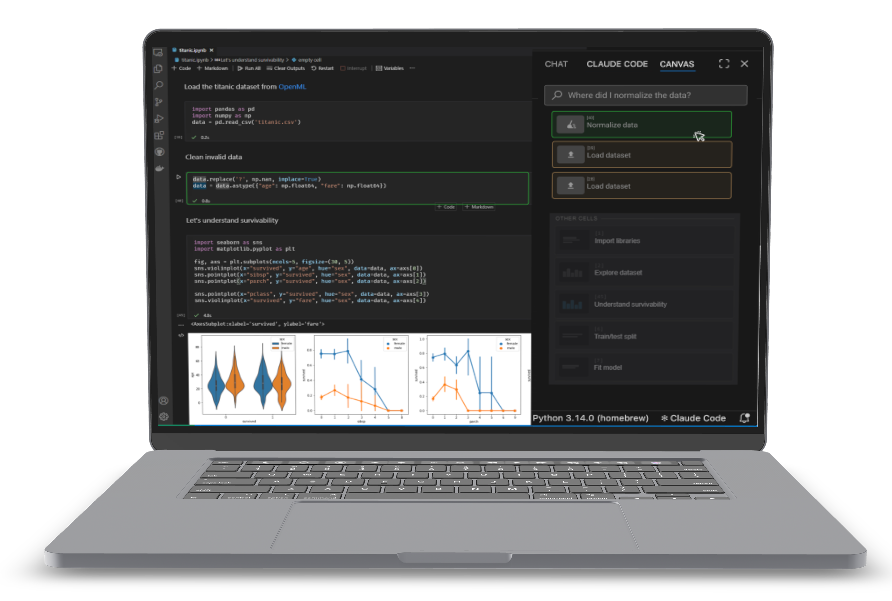

Semantic Canvas
| computational notebook extension
What I Did
- Built Semantic Canvas, a VS Code extension for computational notebooks, together with 2 teammates for the "Intelligent Systems" university practical
- Designed it as a toolbox that speeds up navigating, documenting and maintaining notebooks, built around search as the core feature
- Used: Figma, JavaScript, HTML, CSS, Python
The Challenge
Long notebooks are hard to navigate, documentation is often skipped because it slows down coding, and notebooks quietly accumulate dead, stale or duplicate cells over time.
The Solution
Semantic Canvas adds a sidebar code overview, semantic and keyword search, AI-assisted (and human-editable) cell documentation, a sidebar/inline view toggle, code health flags, and configurable AI settings. Users can navigate, document and maintain notebooks without leaving their flow.


1. Navigate & Search
A sidebar gives a clear overview of the notebook's structure, so users can jump to any cell in one click. Two search modes cover both cases: semantic search for top matches by meaning, and a keyword search with VS Code-native features like replace, replace all and match case.
2. Work on Documentation
Each cell gets an automatically generated label and summary, which users can edit or regenerate with AI. AI-written content is marked with a yellow icon and human-edited content with a green one, so it's always clear how much of the documentation is AI vs. human.
3. Receive Feedback
The extension flags dead, stale and duplicate cells, helping users keep notebooks clean and maintainable over time.

4. Switch Views
Users can toggle between a sidebar view, best for seeing the whole notebook structure at a glance, and an inline view, which places documentation directly above the code for easier debugging, editing and a lower learning curve.
5. AI Settings
Users control their own API key, choice of model, and which code health checks run — balancing cost, privacy and personal preference.